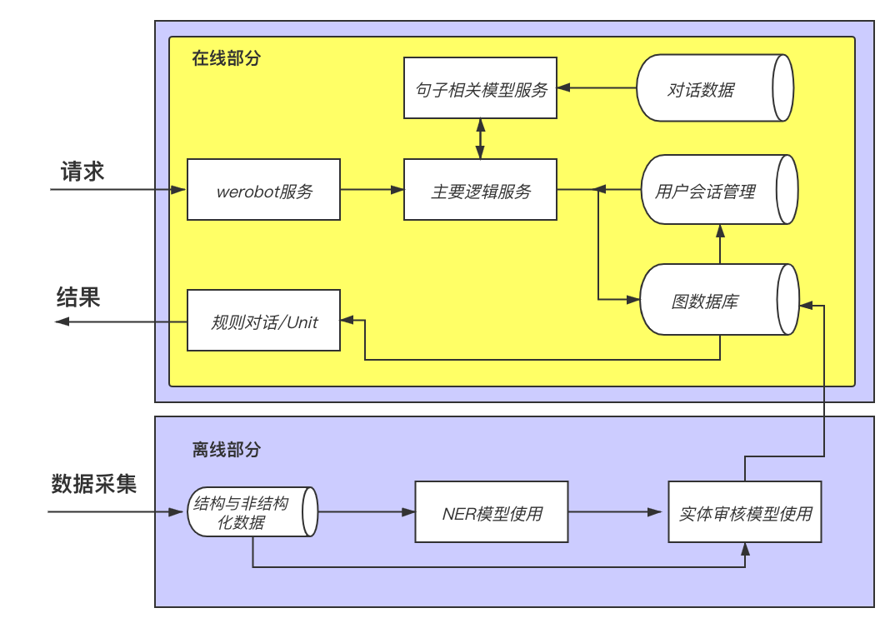

第九章:系统联调与测试
9.1 系统联调与测试¶
-
学习目标：
- 掌握如何启动系统在线部分的服务。
- 掌握对运行服务分别进行测试的过程。
-
系统架构图：

- 系统在线部分的主要服务：
- werobot服务
- 主要逻辑服务
- 句子相关模型服务
- redis服务(会话管理)
- neo4j服务(图数据查询)
说明：系统联调与测试是对系统在线部分服务的联调与测试，不包含离线部分的内容。
1 管理系统在线部分服务¶
通过supervisord管理以下服务
- werobot服务
- 主要逻辑服务
- 句子相关模型服务
- redis服务
- neo4j服务
1.1 配置werobot服务¶
# 在/etc/supervisord.conf中添加以下配置，其中/root/xxx/为项目实际根目录
# /path/to/python是在虚拟环境下通过 which python 命令查找到的python真实路径
# 例如 /root/anaconda3/envs/ai_doctor/bin/python
# /path/to/gunicorn是在虚拟环境下通过 which gunicorn 命令查找到的gunicorn真实路径
# 例如/root/anaconda3/envs/ai_doctor/bin/gunicorn
[program:werobot]
command=/path/to/gunicorn -w 1 wr:robot.wsgi
directory=/root/xxx/
stopsignal=QUIT
stopasgroup=false
killasgroup=false
stdout_logfile=/var/log/werobot_out
stdout_logfile_maxbytes=1MB
stderr_logfile=/var/log/werobot_error
stderr_logfile_maxbytes=1MB
1.2 配置主要逻辑服务¶
# 在/etc/supervisord.conf中添加以下配置，其中/root/xxx/为项目实际根目录
# /path/to/gunicorn是在虚拟环境下通过 which gunicorn 命令查找到的gunicorn真实路径
# 例如/root/anaconda3/envs/ai_doctor/bin/gunicorn
[program:main_serve]
command=/path/to/gunicorn -w 1 -b 0.0.0.0:5000 app:app
directory=/root/xxx/doctor_online/main_serve
stopsignal=QUIT
stopasgroup=false
killasgroup=false
stdout_logfile=/var/log/main_serve_out
stdout_logfile_maxbytes=1MB
stderr_logfile=/var/log/main_serve_error
stderr_logfile_maxbytes=1MB
1.3 配置句子相关模型服务¶
# 在/etc/supervisord.conf中添加以下配置，其中/root/xxx/为项目实际根目录
# /path/to/gunicorn是在虚拟环境下通过 which gunicorn 命令查找到的gunicorn真实路径
[program:bert_serve]
command=/path/to/gunicorn -w 1 -b 0.0.0.0:5001 app:app
directory=/root/xxx/doctor_online/bert_serve
stopsignal=QUIT
stopasgroup=false
killasgroup=false
stdout_logfile=/var/log/bert_serve_out
stdout_logfile_maxbytes=1MB
stderr_logfile=/var/log/bert_serve_error
stderr_logfile_maxbytes=1MB
1.4 配置redis服务¶
[program:redis]
command=redis-server
1.5 配置neo4j¶
# 注意配置neo4j需要修改/var/log/neo4j/和/var/lib/neo4j目录属组，否则无法启动
# chown -R neo4j:neo4j /var/log/neo4j
# chown -R neo4j:neo4j /var/lib/neo4j
[program:neo4j]
command=neo4j console
user=neo4j
autostart=true
autorestart=unexpected
startsecs=30
startretries=999
priorities=90
exitcodes=0,1,2
stopsignal=SIGTERM
stopasgroup=true
killasgroup=true
redirect_stderr=true
stdout_logfile=/var/log/neo4j/neo4j_supervisor.out
stdout_logfile_backups=10
stderr_capture_maxbytes=20MB
1.6 supervisord使用¶
1 启动¶
两种方式启动supervisord
1 如果配置文件在/etc/supervisord.conf，可以直接使用系统命令启动supervisord服务
# 启动，启动时会同时启动管理的任务
systemctl start supervisord
# 停止，停止时会同时停止管理的任务
systemctl stop supervisord
# 可以设置开机启动
systemctl enable supervisord
# 取消开机启动
systemctl disable supervisord
# 注意，使用supervisord管理neo4j需要取消neo4j开机启动，否则会和suporvisord冲突。
systemctl disable neo4j
2 如果配置文件在项目路径下，则需要手动启动supervisord服务
# 使用supervisord命令，读取指定目录下的配置文件
supervisord -c /path/to/supervisord.conf
# 同时取消开机启动
systemctl disable supervisord
2 查看服务状态¶
supervisorctl status all
输出效果：
bert_serve RUNNING pid 29686, uptime 0:12:10
main_serve RUNNING pid 29685, uptime 0:12:10
neo4j RUNNING pid 29689, uptime 0:12:10
redis RUNNING pid 29687, uptime 0:12:10
werobot RUNNING pid 29688, uptime 0:12:10
3 supervisord相关命令¶
supervisorctl # 该命令进入supervisord命令行
# 在supervisord命令行中输入
status # 查看管理服务状态
stop xxx # 关闭xxx服务
start xxx # 启动xxx服务
通过端口查看服务进程
# 通过yum安装lsof命令
sudo yum install lsof -y
# 查看5000 5001端口的进程
lsof -i:5000
lsof -i:5001
2 进行测试¶
- 第一步：明确测试说明。
- 第二步：添加打印测试内容。
- 第三步：重新启动主要逻辑服务。
- 第四步：进行数据流测试并查看打印日志。
2.1 第一步：测试说明¶
因为主要逻辑服务是所有在线服务的中心服务(该服务将接收或发送请求给其他服务), 因此我们的测试打印信息都在主要逻辑服务中进行。
2.2 第二步：添加打印测试内容¶
class Handler(object):
"""主要逻辑服务的处理类"""
def __init__(self, uid, text, r, reply):
"""
:param uid: 用户唯一标示uid
:param text: 该用户本次输入的文本
:param r: redis数据库的连接对象
:param reply: 规则对话模版加载到内存的对象(字典)
"""
self.uid = uid
self.text = text
self.r = r
self.reply = reply
def non_first_sentence(self, previous):
"""
description: 非首句处理函数
:param previous: 该用户当前句(输入文本)的上一句文本
:return: 根据逻辑图返回非首句情况下的输出语句
"""
# 尝试请求模型服务，若失败则打印错误结果
###################################################
# 能够打印该信息，说明已经进入非首句处理函数。
print("准备请求句子相关模型服务!")
###################################################
try:
data = {"text1": previous, "text2": self.text}
result = requests.post(model_serve_url, data=data)
if result.text == '0': return unit_chat(self.text)
###################################################
# 能够打印该信息，说明句子相关模型服务请求成功。
print("句子相关模型服务请求成功，返回结果为：", result.text)
###################################################
except Exception as e:
print("模型服务异常：", e)
return unit_chat(self.text)
###################################################
# 能够打印该信息，说明开始准备请求neo4j查询服务。
print("请求模型服务后，准备请求neo4j查询服务!")
###################################################
# 继续查询图数据库，并获得结果
s = query_neo4j(self.text)
###################################################
# 能够打印该信息，说明neo4j查询成功。
print("neo4j查询服务请求成功，返回结果：", s)
###################################################
# 判断结果为空列表，则直接使用UnitAPI返回
if not s: return unit_chat(self.text)
# 若结果不为空，获取上一次已回复的疾病old_disease
old_disease = self.r.hget(str(self.uid), "previous_d")
if old_disease:
# new_disease是本次需要存储的疾病，是已经存储的疾病与本次查询到疾病的并集
new_disease = list(set(s) | set(eval(old_disease)))
# res是需要返回的疾病，是本次查询到的疾病与已经存储的疾病的差集
res = list(set(s) - set(eval(old_disease)))
else:
# 如果old_disease为空，则它们相同都是本次查询结果s
res = new_disease = list(set(s))
# 存储new_disease覆盖之前的old_disease
self.r.hset(str(self.uid), "previous_d", str(new_disease))
# 设置过期时间
self.r.expire(str(self.uid), ex_time)
# 将列表转化为字符串，添加到规则对话模版中返回
res = ",".join(s)
###################################################
# 能够打印该信息，说明neo4j查询后有结果并将使用规则对话模版。
print("使用规则对话模版进行返回对话的生成!")
###################################################
print("###################################################")
return self.reply["2"] %res
def first_sentence(self):
"""首句处理函数"""
# 直接查询图数据库，并获得结果
###################################################
# 能够打印该信息，说明进入了首句处理函数并马上进行neo4j查询
print("该用户近期首次发言，不必请求模型服务，准备请求neo4j查询服务!")
###################################################
s = query_neo4j(self.text)
###################################################
# 能够打印该信息，说明已经完成neo4j查询。
print("neo4j查询服务请求成功，返回结果为：", s)
###################################################
# 判断结果为空列表，则直接使用UnitAPI返回
if not s: return unit_chat(self.text)
# 将s存储为"上一次返回的疾病"
self.r.hset(str(self.uid), "previous_d", str(s))
# 设置过期时间
self.r.expire(str(self.uid), ex_time)
# 将列表转化为字符串，添加到规则对话模版中返回
res = ",".join(s)
###################################################
# 能够打印该信息，说明neo4j查询后有结果并将使用规则对话模版。
print("使用规则对话生成模版进行返回对话的生成!")
###################################################
print("###################################################")
return self.reply["2"] %res
# 设定主要逻辑服务的路由和请求方法
@app.route('/v1/main_serve/', methods=["POST"])
def main_serve():
###################################################
# 能够打印该信息，说明werobot服务发送请求成功。
print("已经进入主要逻辑服务，werobot服务运行正常!")
###################################################
# 接收来自werobot服务的字段
uid = request.form['uid']
text = request.form['text']
# 从redis连接池中获得一个活跃连接
r = redis.StrictRedis(connection_pool=pool)
# 根据该uid获取他的上一句话(可能不存在)
previous = r.hget(str(uid), "previous")
# 将当前输入的文本设置成上一句
r.hset(str(uid), "previous", text)
###################################################
# 能够打印该信息，说明redis能够正常读取和写入数据。
print("已经完成初次会话管理，redis运行正常!")
###################################################
# 读取规则对话模版内容到内存
reply = json.load(open(reply_path, "r"))
# 实例化主要逻辑处理对象
handler = Handler(uid, text, r, reply)
# 如果previous存在，说明不是第一句话
if previous:
# 调用non_first_sentence方法
return handler.non_first_sentence(previous)
else:
# 否则调用first_sentence()方法
return handler.first_sentence()
- 代码位置：/data/doctor_online/main_serve/app.py
2.3 第三步：重新启动主要逻辑服务¶
supervisorctl restart all
2.4 第四步：进行数据流测试并查看打印日志¶
1 测试请求1¶
用户关注公众号后首次发送一些症状描述。
- 对应数据流：
-
werobot服务→请求主要逻辑服务→主要逻辑服务中请求redis服务→请求neo4j查询服务→使用规则对话模版/UnitAPI.
-
对应操作：
-
关注公众号(使用新用户), 发送"我最近有些腹痛".
-
查看主要逻辑服务日志：
cat /var/log/main_server_out -
日志打印结果：
## 打印如下结果说明测试成功! 已经进入主要逻辑服务，werobot服务运行正常! 已经完成初次会话管理，redis运行正常! 该用户近期首次发言，不必请求模型服务，准备请求neo4j查询服务! neo4j查询服务请求成功，返回结果为：['癫痫', '小儿糖尿病', '肾上腺危象', '异位急性阑尾炎', '急性胆囊炎'] 使用规则对话模版进行返回生成的对话!
2 测试请求2¶
首次发送后用户继续发送一些症状描述。
- 对应数据流：
-
werobot服务→请求主要逻辑服务→主要逻辑服务中请求redis服务→请求句子相关模型服务→请求neo4j查询服务→使用规则对话模版/UnitAPI.
-
对应操作：
-
发送"我最近有些腹痛"后，继续发送"并且左腹部有一些红点".
-
查看主要逻辑服务日志：
cat /var/log/main_server_out -
日志打印结果：
## 打印如下结果说明测试成功!(使用UnitAPI返回结果) 已经进入主要逻辑服务，werobot服务运行正常! 已经完成初次会话管理，redis运行正常! 准备请求句子相关模型服务! 句子相关模型服务请求成功，返回结果为：1 请求模型服务后，准备请求neo4j查询服务! neo4j查询服务请求成功，返回结果：[] -
注意：打印日志若不能即时出现，重新启动主要逻辑服务即可。
本章总结：
-
学习了掌握如何启动系统在线部分的服务：
-
以挂起的方式启动werobot服务
-
使用supervisor启动主要逻辑服务及其redis服务
-
以挂起的方式启动子相关模型服务
-
启动和查看neo4j服务(默认已启动)
-
-
学习了如何进行测试：
-
第一步：明确测试说明。
-
第二步：添加打印测试内容。
-
第三步：重新启动主要逻辑服务。
-
第四步：进行数据流测试并查看打印日志。
-